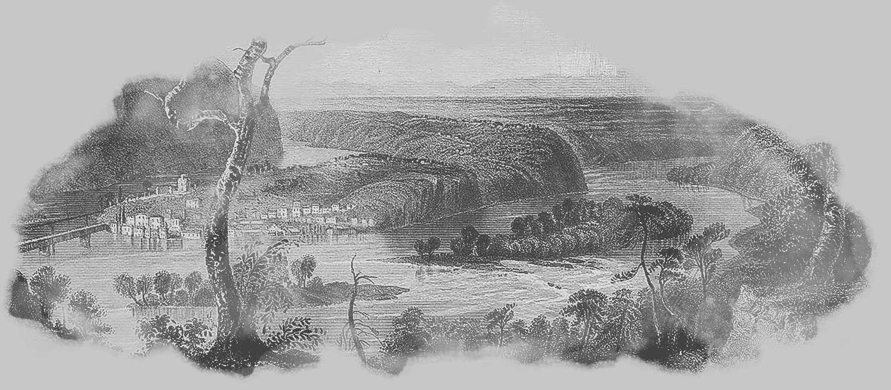
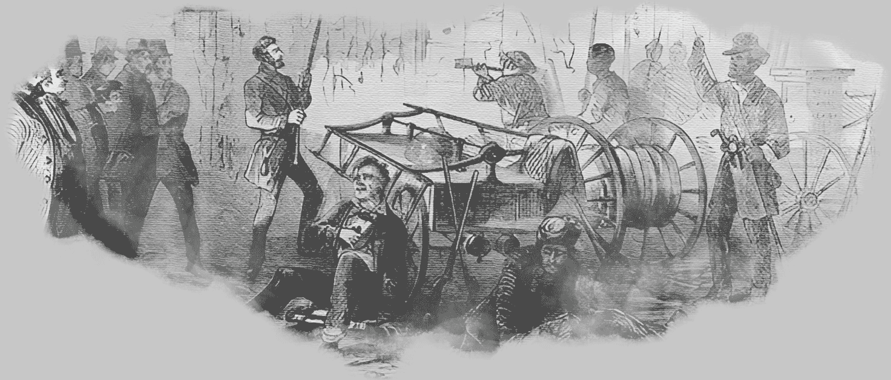
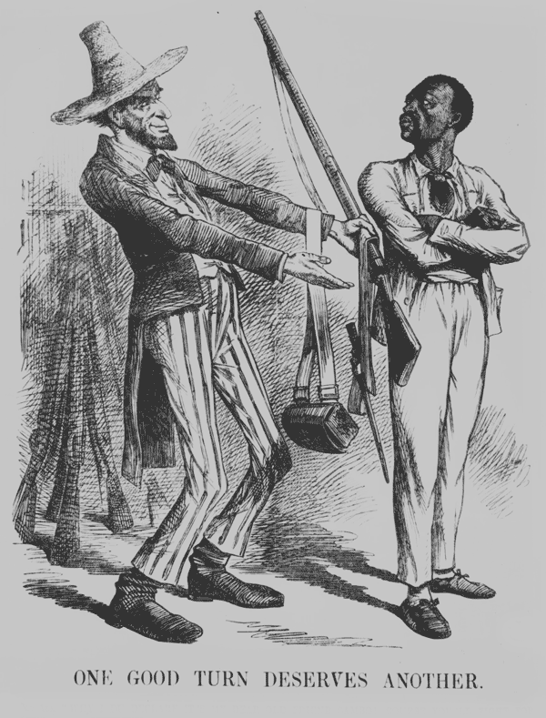
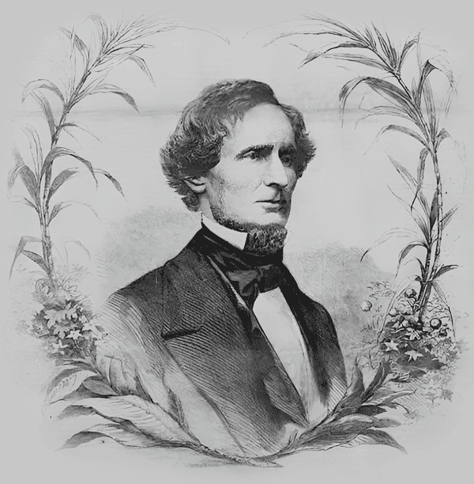
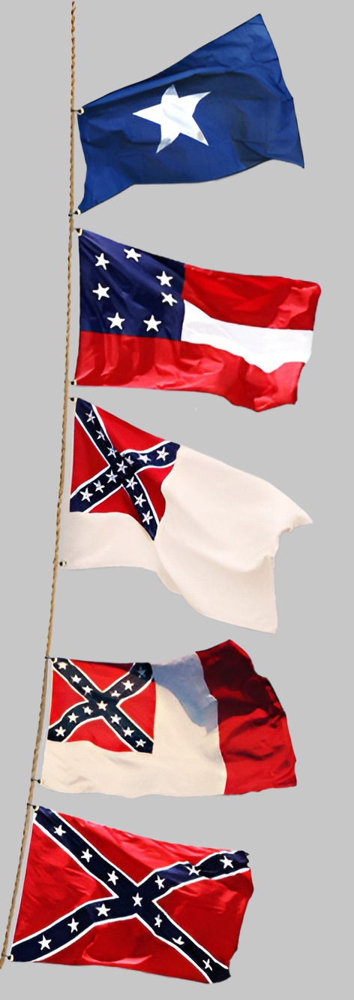
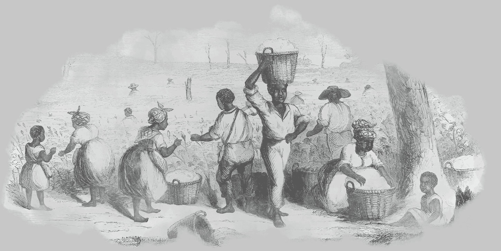
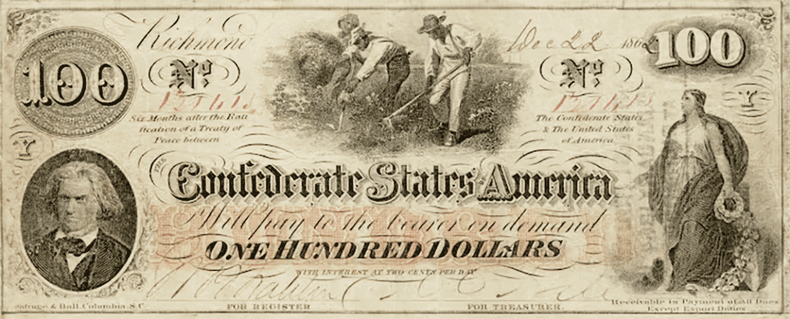

Rozdíly mezi severními a jižními státy USA jsou a vždy byly naprosto přirozeným důsledkem mnoha faktorů.
Asi největší vliv na demografické odlišnosti mělo již osídlování severoamerického kontinentu. Zejména pak období kolonizace, kdy si nová území začalo nárokovat hned několik evropských mocností. Východ kontinentu ve velkém osídlovalo Britské impérium, Francie se angažovala hlavně na jihu a v povodí Mississippi. Španělsko se zaměřilo na západ a dnešní území Floridy. Své kolonie na východním pobřeží zakládalo Nizozemsko a Švédsko. To způsobovalo výraznou hospodářskou, kulturní a náboženskou rozmanitost.
Stačí se zaměřit pouze na třináct původních britských kolonií. Ty vznikaly často jako útočistě různých svobodomyslných nebo menšinových skupin, které by jinak v Evropě společnou řeč našly jen velmi obtížně. Na severu se budovaly komunity okolo farností a farem, zakládaly se školy a vznikaly průmyslové základny. Na jihu probíhala kolonizace poněkud odlišně. Půda nebyla ani tak osídlována jako využívána. Velké pozemky obdělávali nejprve zločinci a později otroci. Ze zisků profitovali bohatí majitelé, žijící, alespoň ze začátku, převážně v Evropě. Kolonie tak spojoval snad jen sílící odpor k britské nadvládě.
Vydáním Deklarace o nezávislosti 4. července 1776 se britské kolonie spojily ve společném boji. Vznikly Spojené státy americké. Ve Válce za nezávislost /1775-1783/ se koloniím podařilo společně vybojovat samostatnost, přesto však v mnoha ohledech nelze mluvit o jejich jednotě. Pravomoce a vliv orgánů jednotlivých států byly stále větší než moc federální vlády. Ty posílila až nová Ústava Spojených států z roku 1789. Tvůrci Ústavy mimo jiné řešili otázku existence otroctví v Unii. Úvahy o zrušení otroctví narazily na tvrdý odpor jižních států, jejichž hospodářství bylo tradičně založeno na tomto využití levné pracovní síly. Nakonec nebyla problematika otroctví do Ústavy vůbec zanesena. Nastalo období sporů a kompomisů při přijímání každého nového státu do Unie. Snahou Severu byl zákaz otrokářství na všech nových územích, Jih prosazoval právo každého nového státu zvolit si své zřízení samostatně.

Aby toho nebylo málo, do víru ostrých politických sporů se stále hlasitěji ozývaly hlasy příznivců abolicionistického hnutí. Tito odpůrci otroctví poměrně rychle přešli od protestů a demonstrací ke krvavému prosazování svých názorů. Docházelo k ozbrojeným srážkám, zejména ve sporném Kansasu. V letech 1854-1859 si tyto šarvátky vyžádaly stovky obětí. Boj militantních abolicionistů vyvrcholil v říjnu 1859 povstáním Johna Browna v Harpers Ferry. Přestože tato "teroristická" akce byla rychle potlačena armádou (jednotce velel tehdy ještě plukovník Robert E. Lee) a její vůdce byl polapen a popraven, zásluhou fanatických abolicionistů se stala legendou a Brown mučedníkem.

Události v Harpers Ferry rozhodně rozjitřeným náladám ve společnosti neprospěly. Jižané se cítí zneužíváni, vykořisťováni a zesměšňováni. Sever podle nich prožívá obrovský hospodářský boom na jejich úkor. Bavlníkové plantáže sice generují nemalé zisky, ale velká část z nich končí v rukou zprostředkovatelů a obchodníků ze Severu. Faktem je, že v roce 1860 státy New York a Pensylvánie produkovaly dvojnásobně více průmyslových výrobků než celý Jih dohromady.
V jižních státech začal převládat názor že doba kompromisů pominula a začíná se mluvit o nezávislosti na Unii. V Kongresu se prudce vyostřila situace a docházelo k slovním i fyzickým střetům mezi kongresmany. Zástupci jižních států zpochybňovali základy federalismu a stavěli na první místo práva jednotlivých států před ústřední mocí. Pokud možno mírové vystoupení z Unie se zdá jako nejlepší ochrana Jihu před nebezpečím abolicionistického teroru, hospodářskou diskriminací a neustálými intervencemi vlády do jeho záležitostí. Centrální vláda však takovéto řešení zásadně odmítala. Během zasedání Kongresu v prosinci 1859 došla situace tak daleko, že v atmosféře vzájemného obviňování nebylo možné ani zvolit předsedajícího a dokonce panovaly obavy z krveprolití v jednacím sále.

Ve Washingtonu se otevřeně mluvilo o rebelii ale kongres si paradoxně oddychl. Po dlouhé době mohl za nepřítomnosti jižanských zástupců začít schvalovat do té doby neprůchodné zákony. Začátkem března se Lincoln ujímá funkce prezidenta a dává najevo že nehodlá uznat existenci a svrchovanost Konfederace. Začátkem března jmenuje federální vládu. Stejně tak Davis v Montgomery vládu Konfederace. Dobytí pevnosti Fort Sumter dalo dalším událostem rychlý spád. Lincoln povolává do zbraně 75 000 dobrovolníků. Reakcí je vystoupení dalších států z Unie. 17. dubna se v Richmondu pro secesi rozhodl stát Virginie. V Marylandu bylo pochopitelně hlasování o odtržení po silným tlakem blízkého Washingtonu. V případě přistoupení tohoto státu ke Konfederaci by se hlavní město Unie ocitlo mimo blok svobodných států. Nakonec i díky represím proti sympatizantům rebelie, zůstává Maryland v Unii. Kongres Konfederace 3. května oficiálně potvrdil válečný stav s USA a na její stranu přešly další státy. 6. května Arkansas, 7. května Tennessee a 20. května Severní Karolína.
Richmond, hlavní město Virginie, se zdál jako sídlo pro prezidenta a vládu CSA vhodnější než poněkud provinční Montgomery. Kongres tedy rozhodl o novém hlavním městě a 21. května 1861 zavlála nad Richmondským kapitolem vlajka se sedmi hvězdami zakládajících členů. Vzhledem k začínajícím válečným operacím nebyla příslušnost dvou zbývajících otrokářských států, Missouri a Kentucky, až do konce války jednoznačná. Jejich obyvatelstvo bylo v přílišném rozkolu mezi příznivci a odpůrci Unie a po dobu konfliktu tvořilo území těchto států jakési nárazníkové pásmo. Přesto byly v prosinci 1862 Kentucky a Missouri formálně přijaty jako dvanáctý a třináctý stát Konfederace.

Po návratu domů byl jmenován ministrem války ve vládě Franklina Pierceho a dvakrát byl zvolen senátorem ale ani jednou nedokončil volební období. Později Davis vystupoval jako mluvčí jižních států a snažil se prosadit Jih jako "stát ve státě". Když došlo k secesi prvních států, ocitl se Davis na seznamu kandidátů pro funkci prezidenta nové Konfederace. Jeho soupeř Alexander Stephens z Georgie byl nařčen z prounionistických postojů a další kandidát Howell Cobb funkci odmítl. Volba Davise se tak stala kompromisem mezi zájmovými skupinami na ustanovující konferenci.


Přestože ústava Konfederace z velké části vycházela z dosavadní ústavy USA, bylo v ní přece jenom několik výrazných odlišností. V první řadě to bylo ustanovení o statutu jednotlivých států, které nyní měly vystupovat jako suverénní a nezávislé. Kromě toho se lišila ještě v několika bodech. Bylo to hlavně ustanovení o zákazu diskuse o otroctví na zákonodárných fórech, zákaz zavádění cel a jiných omezení zahraničního obchodu a zákaz vydávání zákonů týkajících se otroctví.
Nastavení úrovně diplomatických vztahů Konfederace vůči státům zůstávajím ve svazku Spojených států bylo na Jihu bezprostředně po secesi zdrojem bouřlivé diskuse. Nejhlasitější byly hlasy radikálů vyzývajících k hospodářské blokádě a vůbec k přerušení veškerých vztahů.
Od samého začátku své existence se Konfederace snažila o mezinárodní uznání své nezávislosti. Důležité bylo navázání diplomatických styků s evropskými mocnostmi, zvláště s Anglií a Francií. Ve Spojeném království nemalá část veřejnosti s jižany sympatizovala, zejména kvůli potřebě bavlny pro textilní průmysl. Také francouzský císař Napoleon III. byl podpoře Konfederace nakloněn. Někteří jednotlivci z Evropy dodávali Jihu zbraně nebo mu poskytovali jinou podporu. V britských loděnicích bylo například pro Konfederaci postaveno několik válečných lodí.
Jižanští politici věřili, že seveřanská blokáda námořního obchodu by mohla donutit Británii k přímé vojenské podpoře. Již v květnu 1861 se setkal britský ministr zahraničí s jižanskými zmocněnci ohledně uznání svrchovanosti Konfederace Britským impériem. Královna Viktorie několik dní nato prohlásila že Velká Británie zůstane ve válce neutrální, avšak uznává Konfederaci jako válčící stranu se všemi právy. Anglie dala jasně najevo, že se nenechá do konfliktu zatáhnout. Ovšem zanedlouho došlo k událostem, které ve svém důsledku ochladily vztahy mezi Velkou Británií a Spojenými státy na bod mrazu. Více v článku Kauza Trent.
Základem hospodářství států Konfederace bylo především zemědělství. Kromě bavlníkových plantáží, hlavního tahouna ekonomiky, to bylo i pěstování tabáku, rýže, obilí nebo cukrové třtiny. Průmyslových podniků bylo na Jihu pomálu. Pro zemi, která se měla chystat na válku, to byla tristní situace. Přeorientování na válečnou ekonomiku vedlo neodvratně k omezení civilní produkce a zhoršení životní úrovně obyvatelstva.

Pozoruhodné bylo rychlé zavedení jednotné měny. První edice "Greybacks" (slangové označení konfederačních dolarů) byla distribuována do oběhu již v dubnu 1861, kdy byla Konfederace pouze dva měsíce stará. Hodnota konfederačního dolaru byla krytá bavlnou. Jih, jako největší producent bavlny na světě, vyprodukoval v roce 1860 více než čtyři miliony žoků bavlny, z čehož více než tři čtvrtiny šly na export, zejména do Anglie. Majitelům plantáží s bavlnou vláda vystavovala dluhopisy a plantážníkům vesele plynul zisk z podílů na půjčkách. Vše šlo podle plánu až do chvíle kdy Unie začala s blokádou pobřeží a přístavů, tolik potřebných pro export bavlny.
Za dobu existence Konfederace bylo dáno do oběhu celkem sedm sérií bankovek. Bankovky odsouhlasené kongresem měly na líci označení "Confederate States of America" avšak například Virginia nebo Georgia měly i státní varianty. V březnu 1865 kongres odsouhlasil osmou emisi 80 milionů konfederaračních dolarů k zaplacení válečných výdajů ale rozhodnutí bylo vetováno prezidentem Davisem. Dohromady s osmou emisí přesahovala hodnota vydaných bankovek 2 biliony dolarů v konfederační měně. Na sklonku války již byl tisk nových bankovek velmi složitý. Po pádu Columbie, místa kde se bankovky tiskly, byla v únoru 1865 výroba převedena do Andersonu v Jižní Karolíně a Richmondu.
Přes veškeré snahy se konfederační dolar nikdy nestal silnou měnou a nezadržitelně směřoval k hyperinflaci. Jeho hodnota 95 centů za "zlatý dolar" v první emisi spadla v roce 1863 na 33 centů a v dubnu 1865 na pouhých 1,6 centu. Poslední obchody probíhaly v kurzu 1200 ku 1. Jako největší projev patriotismu lze chápat to, že většina Jižanů používala tyto peníze až do konce. Na pádu Jihu do jisté míry neměl zásluhu ani tak Grant nebo Sherman, jako drtivá inflace a malá výkonnost ekonomiky. Unie dokonce tiskla falešné konfederační bankovky aby inflace ještě vzrostla.
